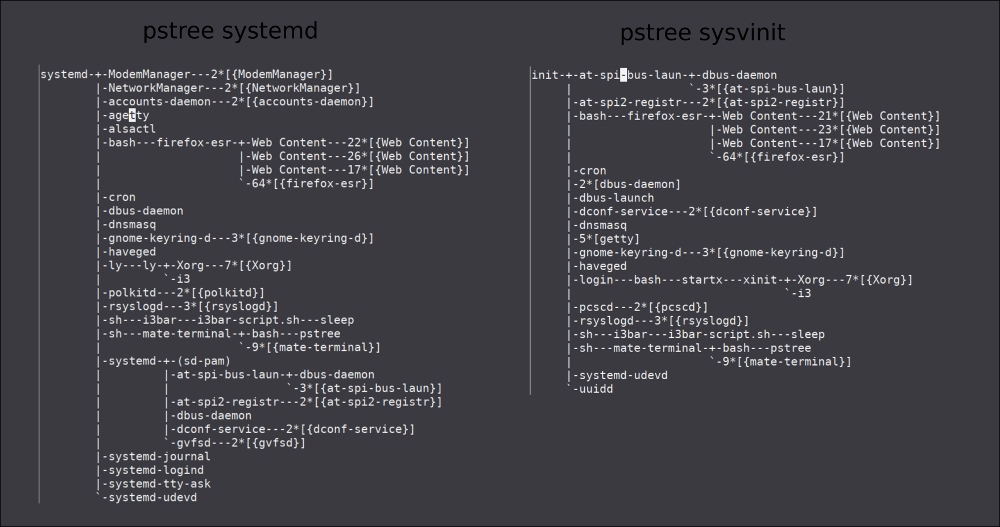

Escape from systemd: Making a custom iso kali-i3-viel.
Table of contents
Why escape from systemd
Because I want to start my system in a kiss way, using the minimum necessary for it to work well and quickly.
In most Linux distros, many things that are not used and use resources are activated by default. Luckily Linux allows you to configure the system at ease under complete control, but … what if I want to make my own startup system?
Systemd is becoming more complicated, it is a binary and changing anything that is not predefined involves changing the source code, compiling and testing. Systemd unit service files are specific to systemd only, they are not scripts that can work without systemd. Every time they make more systemd dependent applications like netctl de arch linux.
Do not follow the Unix philosophy, do one thing and do it well. Nor does it follow my KISS philosophy, make it simple. It makes no sense to make things bigger and bigger with more features … in the end we will have a program (systemd) that will do everything, logs, user control, X, file management, video editing, we won’t need anything else but … I will not enter into a debate or give a conference about whether it is good or not to rely solely on a system, a program, etc. Everyone can search, compare and choose.
Comparing startup systems

Why sysV-init
After investigating a little about openrc, and without any startup system just convincing me at all, I will use SysVinit because it is the first one, it is extensively tested, it is simple to understand and we can reuse the scritps if we want to create our own startup system .
Everyone will have their preferred startup system, this is the advantage of using free software. We have several options and if we don’t like it we can do it. Each startup system has its dependencies, advantages and disadvantages.
Removing systemd
We start from a kali-mate-desktop where I installed i3 and adjusted several keys and shortcuts to mate applications, such as mate-screenshoot. To replace systemd with sysV-init [I will follow this link] (https://linuxconfig.org/how-to-replace-systemd-with-sysv-init-on-debian-linux) but I will not add devuan repositories because kali has sysV-init in its repositories.
Verifying that sysvinit is in the repositories
root@kali:~/live-build-config# apt-cache search sysvinit
acct - GNU Accounting utilities for process and login accounting
dumb-init - wrapper script which proxies signals to a child
git-daemon-run - fast, scalable, distributed revision control system (git-daemon service)
git-daemon-sysvinit - fast, scalable, distributed revision control system (git-daemon service)
init-system-helpers - helper tools for all init systems
live-config-sysvinit - Live System Configuration Components (sysvinit backend)
systemd-sysv - system and service manager - SysV links
sysvinit-core - System-V-like init utilities
sysvinit-utils - System-V-like utilities
root@kali:~/live-build-config#
Installing sysvinit we see how it removes some packages that depend on systed.
root@kali:~# apt install sysvinit-core sysvinit-utils
Leyendo lista de paquetes... Hecho
Creando árbol de dependencias
Leyendo la información de estado... Hecho
Los paquetes indicados a continuación se instalaron de forma automática y ya no son necesarios.
accountsservice caja-common engrampa engrampa-common eom eom-common exfat-fuse exfat-utils ffmpegthumbnailer fonts-cantarell gir1.2-eom-1.0
gir1.2-matemenu-2.0 gvfs-common gvfs-libs libaccountsservice0 libappstream4 libatasmart4 libayatana-appindicator3-1 libayatana-ido3-0.4-0
libayatana-indicator3-7 libblockdev-crypto2 libblockdev-fs2 libblockdev-loop2 libblockdev-part-err2 libblockdev-part2 libblockdev-swap2 libblockdev-utils2
libblockdev2 libcpufreq0 libdbusmenu-glib4 libdbusmenu-gtk3-4 libexempi8 libffmpegthumbnailer4v5 libgdata-common libgdata22 libgoa-1.0-0b
libgoa-1.0-common libgphoto2-6 libgphoto2-l10n libgphoto2-port12 libgtkmm-3.0-1v5 libgucharmap-2-90-7 libindicator3-7 liblightdm-gobject-1-0
libmate-desktop-2-17 libmate-menu2 libmate-panel-applet-4-1 libmate-slab0 libmate-window-settings1 libmatedict6 libmatekbd-common libmatekbd4
libmatemixer-common libmatemixer0 libmateweather-common libmateweather1 libndp0 libnfs12 libnma0 liboauth0 librda-common librda0 libstemmer0d libteamdctl0
libudisks2-0 libvolume-key1 libxklavier16 lightdm-gtk-greeter mate-applets-common mate-backgrounds mate-calc mate-calc-common mate-control-center-common
mate-desktop mate-icon-theme mate-media mate-media-common mate-menus mate-panel-common mate-polkit-common mate-power-manager-common mate-screensaver
mate-screensaver-common mate-settings-daemon-common mate-system-monitor mate-system-monitor-common mate-themes mate-user-guide mate-utils
mate-utils-common menu menu-xdg mobile-broadband-provider-info
Utilice «apt autoremove» para eliminarlos.
Se instalarán los siguientes paquetes adicionales:
caja-common gvfs-libs initscripts insserv libmate-panel-applet-4-1 libmate-slab0 libmate-window-settings1 libnm0 libnss-systemd libsystemd0
mate-applets-common mate-control-center-common mate-panel-common mate-power-manager-common startpar systemd sysv-rc
Paquetes sugeridos:
bootchart2 systemd-container policykit-1 bootlogd
Paquetes recomendados:
libpam-systemd
Los siguientes paquetes se ELIMINARÁN:
caja dbus-user-session ettercap-graphical gvfs gvfs-backends gvfs-daemons kali-desktop-core kali-desktop-i3 kali-desktop-mate libpam-systemd lightdm
mate-applet-brisk-menu mate-applets mate-control-center mate-desktop-environment mate-desktop-environment-core mate-panel mate-polkit mate-power-manager
mate-settings-daemon network-manager network-manager-gnome packagekit packagekit-tools policykit-1 systemd-sysv udisks2
Se instalarán los siguientes paquetes NUEVOS:
initscripts insserv startpar sysv-rc sysvinit-core
Se actualizarán los siguientes paquetes:
caja-common gvfs-libs libmate-panel-applet-4-1 libmate-slab0 libmate-window-settings1 libnm0 libnss-systemd libsystemd0 mate-applets-common
mate-control-center-common mate-panel-common mate-power-manager-common systemd sysvinit-utils
14 actualizados, 5 nuevos se instalarán, 27 para eliminar y 667 no actualizados.
Se necesita descargar 19,9 MB de archivos.
Se liberarán 36,1 MB después de esta operación.
¿Desea continuar? [S/n]
---skipped---
Desinstalando systemd-sysv (241-7) ...
Seleccionando el paquete sysvinit-core previamente no seleccionado.
(Leyendo la base de datos ... 535426 ficheros o directorios instalados actualmente.)
Preparando para desempaquetar .../sysvinit-core_2.96-1_amd64.deb ...
Desempaquetando sysvinit-core (2.96-1) ...
Preparando para desempaquetar .../libnss-systemd_242-8_amd64.deb ...
Desempaquetando libnss-systemd:amd64 (242-8) sobre (241-7) ...
Preparando para desempaquetar .../systemd_242-8_amd64.deb ...
Desempaquetando systemd (242-8) sobre (241-7) ...
Preparando para desempaquetar .../libsystemd0_242-8_amd64.deb ...
Desempaquetando libsystemd0:amd64 (242-8) sobre (241-7) ...
Configurando libsystemd0:amd64 (242-8) ...
Progreso: [ 8%] [###########.............................................................................................................................]
Copying inittab to our etc.
root@kali:~# cp /usr/share/sysvinit/inittab /etc/inittab
root@kali:~#
Restarting the pc.
reboot
After restarting we remove systemd that remove more packages that depend of it.
root@kali:~# apt remove --purge --auto-remove systemd
Leyendo lista de paquetes... Hecho
Creando árbol de dependencias
Leyendo la información de estado... Hecho
Los siguientes paquetes se ELIMINARÁN:
accountsservice* caja-common* engrampa* engrampa-common* eom* eom-common* exfat-fuse* exfat-utils* ffmpegthumbnailer* fonts-cantarell* gir1.2-eom-1.0*
gir1.2-matemenu-2.0* gvfs-common* gvfs-libs* iio-sensor-proxy* libaccountsservice0* libappstream4* libatasmart4* libayatana-appindicator3-1*
libayatana-ido3-0.4-0* libayatana-indicator3-7* libblockdev-crypto2* libblockdev-fs2* libblockdev-loop2* libblockdev-part-err2* libblockdev-part2*
libblockdev-swap2* libblockdev-utils2* libblockdev2* libcpufreq0* libdbusmenu-glib4* libdbusmenu-gtk3-4* libexempi8* libffmpegthumbnailer4v5*
libgdata-common* libgdata22* libgoa-1.0-0b* libgoa-1.0-common* libgphoto2-6* libgphoto2-l10n* libgphoto2-port12* libgtkmm-3.0-1v5* libgucharmap-2-90-7*
libindicator3-7* liblightdm-gobject-1-0* libmate-desktop-2-17* libmate-menu2* libmate-panel-applet-4-1* libmate-slab0* libmate-window-settings1*
libmatedict6* libmatekbd-common* libmatekbd4* libmatemixer-common* libmatemixer0* libmateweather-common* libmateweather1* libndp0* libnfs12* libnma0*
libnss-systemd* liboauth0* libplymouth4* librda-common* librda0* libstemmer0d* libteamdctl0* libudisks2-0* libvolume-key1* libxklavier16*
lightdm-gtk-greeter* mate-applets-common* mate-backgrounds* mate-calc* mate-calc-common* mate-control-center-common* mate-desktop* mate-icon-theme*
mate-media* mate-media-common* mate-menus* mate-panel-common* mate-polkit-common* mate-power-manager-common* mate-screensaver* mate-screensaver-common*
mate-settings-daemon-common* mate-system-monitor* mate-system-monitor-common* mate-themes* mate-user-guide* mate-utils* mate-utils-common* menu* menu-xdg*
mobile-broadband-provider-info* plymouth* plymouth-label* systemd*
0 actualizados, 0 nuevos se instalarán, 99 para eliminar y 915 no actualizados.
Se liberarán 482 MB después de esta operación.
¿Desea continuar? [S/n]
---skipped---
Desinstalando libmateweather-common (1.22.0-1) ...
Desinstalando libndp0:amd64 (1.6-1+b1) ...
Desinstalando libnfs12:amd64 (3.0.0-2) ...
Progreso: [ 61%] [###################################################################################.....................................................]
All depends on systemd
We can use “apt-cache depends package” to see the dependencies of a package, in this case the default file manager of the mate desktop, “caja”. To see the whole tree of dependencies or indirect dependencies we can use apt-rdepends. Indirect dependencies are those that do not depend directly but if through other packages.
To install apt-rdepends
apt install apt-rdepends
We can see the caja dependencies
root@kali:~# apt-rdepends caja | grep systemd
Reading package lists... Done
Building dependency tree
Reading state information... Done
Depends: libsystemd0
libsystemd0
Depends: libpam-systemd
Depends: libsystemd0 (>= 209)
Depends: libsystemd0
Depends: libsystemd0
PreDepends: libsystemd0
libpam-systemd
Depends: systemd (= 242-7)
Depends: systemd-sysv
systemd
Depends: libsystemd0 (= 242-7)
systemd-sysv
PreDepends: systemd
Depends: libsystemd0 (>= 213)
Depends: systemd-sysv
root@kali:~#
All caja dependencies
caja --> gvfs --> gvfs-daemons --> libsystemd0 --> libpam-systemd --> systemd
We can see that many packages like “caja” or “network-manager” depend on systemd….
After purging systemd we see that we have a broken system, because we need to start the network manually, it does not turn off well, it is missing packages like the file-manager of mate (caja), etc.
At this point I decide to do my own kali iso to install non-dependent applications such as lxterminal, pcmanfs etc.
Customizing Kali linux
Goals
- Use sysVinit
- i3wm as a desktop
- Non-dependent and light applications.
Cloning live-build-config
In order to clone the kali git and start creating our iso we need to install, if we don’t have it already,
apt install curl git live-build cdebootstrap
Once the necessary thing is installed, we will clone the kali-live git
root@kali:~# git clone https://gitlab.com/kalilinux/build-scripts/live-build-config.git
Clonando en 'live-build-config'...
remote: Enumerating objects: 3, done.
remote: Counting objects: 100% (3/3), done.
remote: Compressing objects: 100% (3/3), done.
remote: Total 1308 (delta 0), reused 1 (delta 0)
Recibiendo objetos: 100% (1308/1308), 3.76 MiB | 654.00 KiB/s, listo.
Resolviendo deltas: 100% (682/682), listo.
root@kali:~# cd live-build-config/
root@kali:~/live-build-config# ls -la
total 24
drwxr-xr-x 5 root root 138 nov 2 19:07 .
drwxr-xr-x 33 root root 4096 nov 2 19:07 ..
drwxr-xr-x 2 root root 33 nov 2 19:07 auto
lrwxrwxrwx 1 root root 8 nov 2 19:07 build_all.sh -> build.sh
-rwxr-xr-x 1 root root 4688 nov 2 19:07 build.sh
-rw-r--r-- 1 root root 350 nov 2 19:07 .getopt.sh
drwxr-xr-x 8 root root 163 nov 2 19:07 .git
-rw-r--r-- 1 root root 181 nov 2 19:07 .gitignore
drwxr-xr-x 13 root root 247 nov 2 19:07 kali-config
-rw-r--r-- 1 root root 174 nov 2 19:07 README.md
root@kali:~# cd live-build-config/
root@kali:~/live-build-config#
Making our variant
NOTE: Do not use ./build yet. This command creates the iso. We need to customize before spending time and bandwidth.
To work more comfortably without changing the existing variants, we will create a new one, copy “variant-i3wm” and start configuring.
root@kali:~/live-build-config/kali-config# cp -r variant-i3wm variant-i3-custom
root@kali:~/live-build-config/kali-config# ls -la
total 4
drwxr-xr-x 14 root root 272 nov 8 11:46 .
drwxr-xr-x 12 root root 4096 nov 9 17:17 ..
drwxr-xr-x 9 root root 146 nov 2 19:07 common
lrwxrwxrwx 1 root root 17 nov 8 11:46 variant-default -> variant-i3-custom
drwxr-xr-x 5 root root 63 nov 2 19:07 variant-e17
drwxr-xr-x 3 root root 27 nov 2 19:07 variant-gnome
drwxr-xr-x 3 root root 27 nov 2 19:56 variant-i3-custom
drwxr-xr-x 3 root root 27 nov 2 19:07 variant-i3wm
drwxr-xr-x 3 root root 27 nov 2 19:07 variant-kde
drwxr-xr-x 3 root root 27 nov 2 19:07 variant-large
drwxr-xr-x 3 root root 27 nov 2 19:07 variant-light
drwxr-xr-x 3 root root 27 nov 2 19:07 variant-lxde
drwxr-xr-x 3 root root 27 nov 2 19:07 variant-mate
drwxr-xr-x 2 root root 20 nov 2 19:07 variant-minimal
drwxr-xr-x 3 root root 27 nov 2 19:07 variant-xfce
root@kali:~/live-build-config/kali-config#
There are three important points that I will use to customize the iso:
- Packages that will contain our iso and we can install on disk. Under the dir kali-config/our-variant/package-lists/
- Files, scripts, themes, wallpapers, which we will add to the iso, under the dir kali-config/common/includes.chroot/. This dir will be like the root /. The script will copy these files to the iso when doing the root change (chroot).
- Hooks to start/stop services, launch scripts, etc. Under the dir config/hooks/ we will have the hooks to execute. If we start in live iso under the “live” dir, and to execute hooks during the installation in the “normal” dir.
To see what metapackages I have installed in my system maybe to adding any.
root@kali:~/live-build-config/kali-config# apt-cache show $(dpkg-query -Wf '${Package}\n') | awk '$1 == "Package:" { pkg = $2 }; $1 == "Section:" && $2 ~ /metapackage/ { print pkg }'
firmware-linux
firmware-linux
firmware-linux-nonfree
firmware-linux-nonfree
init
kali-desktop-live
kali-desktop-live
kali-linux-core
kali-linux-core
kali-linux-default
kali-linux-default
libreoffice
root@kali:~/live-build-config/kali-config#
First try to make the iso
Copying mi i3 config
root@kali:~/live-build-config# mkdir kali-config/common/includes.chroot/root/.config
root@kali:~/live-build-config# cp /root/data/config/.config/i3/config kali-config/common/includes.chroot/root/.config/i3/config
root@kali:~/live-build-config# cp /root/data/config/.config/i3/i3bar-script.sh kali-config/common/includes.chroot/root/.config/i3/i3bar-script.sh
Adding some packages
root@kali:~/live-build-config# cat kali-config/variant-i3-custom/package-lists/kali.list.chroot
# You always want those
kali-linux-core
kali-desktop-live
# Kali applications
#<package>
# You can customize the set of Kali metapackages (groups of tools) to install
# For the complete list see: https://tools.kali.org/kali-metapackages
# kali-linux-default
# kali-linux-large
# kali-linux-everything
# kali-tools-top10
# Graphical desktop
kali-desktop-i3
# Custom
ncdu htop feh dnsmasq ranger
#lxapearance gnome-theme-kali qt5ct qt4-qtconfig
#vlc ffmpeg youtube-dl
root@kali:~/live-build-config#
Building the iso …
root@kali:~/live-build-config# ./build.sh --variant i3-custom --verbose
[2019-11-08 11:57:06] lb clean --purge
P: Executing auto/clean script.
[2019-11-08 11:57:06] lb clean noauto --purge
P: Executing auto/clean script.
[2019-11-08 11:57:06] lb clean noauto --all
P: Cleaning chroot
----skipped----
The iso we get has systemd, it has bad locales and a resolution of 700x400 … we will try to change these things.
Second try .. round two.
Changing systemd to sysvinit
When searching for systemd in packages, we find it in “config/package-lists/live.list.chroot”, we will copy it to our variant and change systemd to syvinit.
root@kali:~/live-build-config# cat config/package-lists/live.list.chroot
live-boot
live-config
live-config-systemd
root@kali:~/live-build-config# apt-cache search live-config
live-config - Live System Configuration Components
live-config-doc - Live System Configuration Components (documentation)
live-config-systemd - Live System Configuration Components (systemd backend)
live-config-sysvinit - Live System Configuration Components (sysvinit backend)
root@kali:~/live-build-config#
root@kali:~/live-build-config# cp config/package-lists/live.list.chroot kali-config/variant-i3-custom/package-lists/
root@kali:~/live-build-config# vi kali-config/variant-i3-custom/package-lists/live.list.chroot
root@kali:~/live-build-config# cat kali-config/variant-i3-custom/package-lists/live.list.chroot
live-boot
live-config
live-config-sysvinit
root@kali:~/live-build-config#
In the face …
It seems that it will not be so easy. The creation of the iso fails. Looking at the log “build.log” we see.
Some packages could not be installed. This may mean that you have
requested an impossible situation or if you are using the unstable
distribution that some required packages have not yet been created
or been moved out of Incoming.
The following information may help to resolve the situation:
The following packages have unmet dependencies:
libpam-systemd : Depends: systemd-sysv but it is not going to be installed
E: Unable to correct problems, you have held broken packages.
P: Begin unmounting filesystems...
P: Saving caches...
Reading package lists...
Building dependency tree...
Reading state information...
Starting with the minimum
In this link link we can see the priority of the packages that mark the Debian maintainers.
To see a list of packages by standard priority.
root@kali:~/live-build-config# grep-aptavail -n -sPackage -FPriority standard [5/49783]
apt-listchanges
bash-completion
bind9-host
bzip2
dbus
debian-faq
doc-debian
file
gettext-base
groff-base
krb5-locales
libc-l10n
libevent-2.1-6
libgssglue1
liblockfile-bin
libnfsidmap2
libnss-systemd
libpam-systemd
librpcsecgss3
libswitch-perl
locales
lsof
man-db
manpages
mime-support
ncurses-term
netcat-traditional
openssh-client
pciutils
perl
perl-modules-5.30
python
python-minimal
python2.7
python3-reportbug
reportbug
telnet
traceroute
ucf
wamerican
wget
xz-utils
root@kali:~/live-build-config#
To see a list of packages by required priority.
root@kali:~/live-build-config# grep-aptavail -n -sPackage -FPriority required
apt
base-files
base-passwd
bash
bsdutils
coreutils
dash
debconf
debianutils
diffutils
dpkg
e2fsprogs
findutils
gcc-9-base
grep
gzip
hostname
init-system-helpers
libc-bin
libpam-modules
libpam-modules-bin
libpam-runtime
login
mawk
mount
ncurses-base
ncurses-bin
passwd
perl-base
sed
sysvinit-utils
tar
tzdata
util-linux
root@kali:~/live-build-config#
Required are the minimum packages that the ditro really needs to work. Then we can change standard.list.chroot to required. We will have to create required.list.chroot and delete or comment on standard.list.chroot.
root@kali:~/live-build-config# cat config/package-lists/required.list.chroot
! Packages Priority required
root@kali:~/live-build-config# cat config/package-lists/standard.list.chroot
#! Packages Priority standard
root@kali:~/live-build-config#
More dependecy errors
We will need to debug more dependencies of the packages, starting with the minimum has not been enough and we get more dependency errors. After three attempts …
The following packages have unmet dependencies:
kali-desktop-i3 : Depends: kali-desktop-core but it is not going to be installed
kali-desktop-live : Depends: florence but it is not going to be installed
The following packages have unmet dependencies:
florence : Depends: libgtk-3-0 (>= 3.3.16) but it is not going to be installed
kali-desktop-core : Depends: dbus-user-session but it is not going to be installed
The following packages have unmet dependencies:
dbus-user-session : Depends: libpam-systemd but it is not going to be installed
Recommends: systemd-sysv but it is not going to be installed
fixed some errors, adding florence, adding dbus-user-session, libpam-systemd comes out again that depends on systemd, checking metapackage by metapackage we see that the one that generates the problem … the winner is … kali-desktop-i3.
Here we can see that it effectively depends on systemd. XD
root@kali:~/live-build-config# apt-rdepends kali-desktop-i3 | grep systemd
Reading package lists... Done
Building dependency tree
Reading state information... Done
Depends: libsystemd0
libsystemd0
Depends: libsystemd0
Depends: libpam-systemd
Depends: systemd
Depends: libsystemd0
libpam-systemd
Depends: systemd (= 242-7)
Depends: systemd-sysv
systemd
Depends: libsystemd0 (= 242-7)
PreDepends: libsystemd0
systemd-sysv
PreDepends: systemd
Depends: libsystemd0 (>= 209)
Depends: libsystemd0 (>= 221)
PreDepends: libsystemd0
Depends: libsystemd0
Depends: systemd-sysv
root@kali:~/live-build-config#
Definitely removing systemd
To avoid systemd we will have to replace the kali-desktop-i3 metapackage with the i3 package in kali.list.chroot.
The package list of “kali.list.chroot” looks like this.
root@kali:~/live-build-config# cat kali-config/variant-i3-custom/package-lists/kali.list.chroot
# You always want those
kali-linux-core
kali-desktop-live
florence
libgtk-3-0
# Kali applications
#<package>
# You can customize the set of Kali metapackages (groups of tools) to install
# For the complete list see: https://tools.kali.org/kali-metapackages
# kali-linux-default
# kali-linux-large
# kali-linux-everything
# kali-tools-top10
# Graphical desktop
i3
xorg
# Custom
ncdu htop feh dnsmasq ranger
#lxapearance gnome-theme-kali qt5ct qt4-qtconfig
#vlc ffmpeg youtube-dl flameshoot
root@kali:~/live-build-config#
Changing locales
In this link of debian live manual Customizing locale and language we can see how to change the locale.
As the script “build.sh” of the Kali boys does not allow local options we will have to change the line in the script itself.
#run_and_log lb config -a $KALI_ARCH $KALI_CONFIG_OPTS "$@"
run_and_log lb config -a $KALI_ARCH $KALI_CONFIG_OPTS "$@" --bootappend-live "boot=live components locales=es_ES.UTF-8 keyboard-layouts=es"
Screen resolution
For the first tests of the iso, it will be enough with this bungling script to change the resolution.
root@kali:~/live-build-config# cat <<EOF> kali-config/common/includes.chroot/root/scripts/screen-resolution.sh
#!/bin/bash
xrandr --output Virtual-0 --mode 1280x1024
EOF
root@kali:~/live-build-config#
root@kali:~/live-build-config# chmod 700 kali-config/common/includes.chroot/root/scripts/screen-resolution.sh
Disabling services
To speed up the start of the iso, he stayed a minute waiting to up the network with dhcp, we will disable the network and some other services with a hook.
root@kali:~/live-build-config# cat <<EOF> config/hooks/live/disable.services.hook.chroot
#!/bin/bash
update-rc.d ssh remove
update-rc.d apparmor remove
update-rc.d pcscd remove
update-rc.d networking remove
EOF
root@kali:~/live-build-config#
Result

What remains to be done
The ultimate goal is to have an iso of Kali Linux with i3, which uses few resources, where you can install applications on demand, without having many default applications that have to be updated and consume data. Functional for day to day. Maybe make another iso to use in data recovery, forensics or others. We will see.
More customization
I add some scripts and packages, and I change the name to variant-i3-viel.
root@kali:~/live-build-config# cd kali-config/
root@kali:~/live-build-config/kali-config# ls -la
total 4
drwxr-xr-x 14 root root 272 nov 8 11:46 .
drwxr-xr-x 12 root root 4096 nov 9 17:17 ..
drwxr-xr-x 9 root root 146 nov 2 19:07 common
lrwxrwxrwx 1 root root 17 nov 8 11:46 variant-default -> variant-i3-custom
drwxr-xr-x 5 root root 63 nov 2 19:07 variant-e17
drwxr-xr-x 3 root root 27 nov 2 19:07 variant-gnome
drwxr-xr-x 3 root root 27 nov 2 19:56 variant-i3-custom
drwxr-xr-x 3 root root 27 nov 2 19:07 variant-i3wm
drwxr-xr-x 3 root root 27 nov 2 19:07 variant-kde
drwxr-xr-x 3 root root 27 nov 2 19:07 variant-large
drwxr-xr-x 3 root root 27 nov 2 19:07 variant-light
drwxr-xr-x 3 root root 27 nov 2 19:07 variant-lxde
drwxr-xr-x 3 root root 27 nov 2 19:07 variant-mate
drwxr-xr-x 2 root root 20 nov 2 19:07 variant-minimal
drwxr-xr-x 3 root root 27 nov 2 19:07 variant-xfce
root@kali:~/live-build-config/kali-config# mv variant-i3-custom variant-i3-viel
root@kali:~/live-build-config/kali-config#
root@kali:~/live-build-config# ./build.sh --variant i3-viel --verbose
[2019-11-10 19:19:10] lb clean --purge
P: Executing auto/clean script.
[2019-11-10 19:19:10] lb clean noauto --purge
P: Executing auto/clean script.
[2019-11-10 19:19:10] lb clean noauto --all
P: Cleaning chroot
P: Executing auto/clean script.
[2019-11-10 19:19:36] lb clean noauto --cache
[2019-11-10 19:19:38] lb config -a amd64 --distribution kali-rolling -- --variant i3-viel --bootappend-live boot=live components locales=es_ES.UTF-8 keyboard-
layouts=es
P: Executing auto/config script.
----skipped----
I will continue updating the iso, when it was ready i upload it on mi dropbox.
back
References:
My custom kali linux distribution
Licence: CC-BY-SA